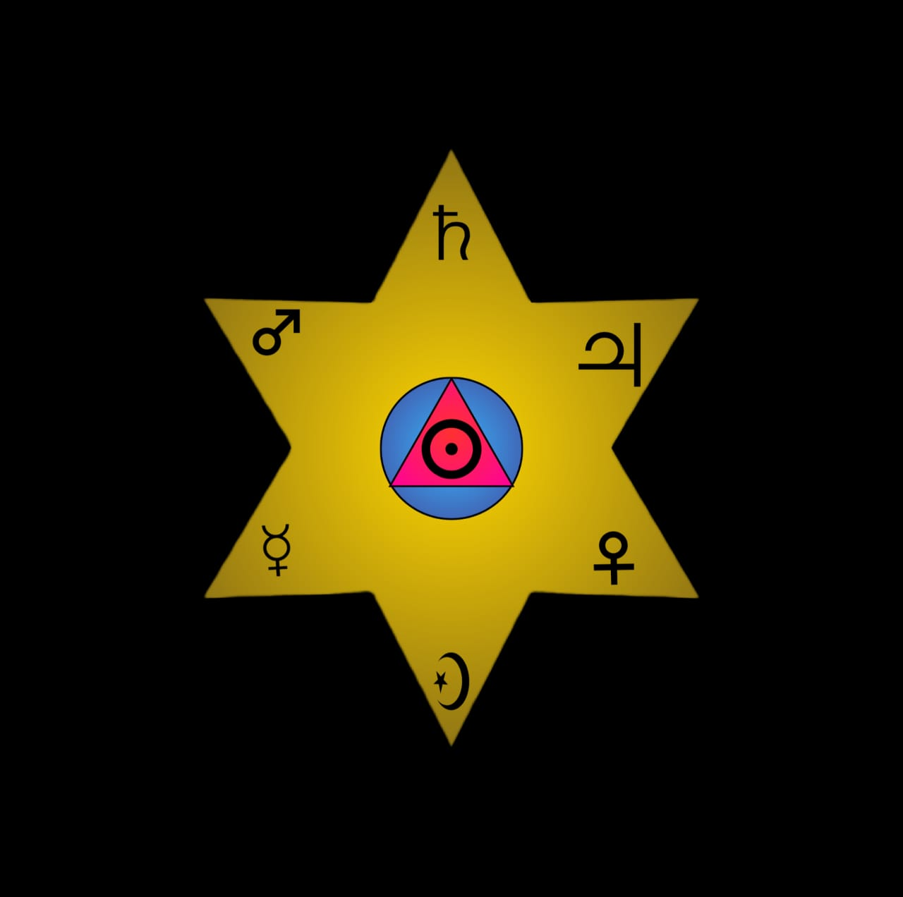

Baltoh HermaticaBaltoh Hermatica is a mystery school and it exists to guide individuals toward balance with the Hermetic laws that govern existence. Through the practice of Justice, the preservation of Liberty, and the pursuit of Self-Knowledge, we foster inner transformation and conscious alignment with the universal order.
Baltoh Hermatica is a not-for-profit organisation deeply rooted in the Western Esoteric Tradition. It is a disciplined philosophical order built upon Hermetic principles, Alchemy and Qabbalah, dedicated to structured growth, knowledge, and inner balance.
Eligibility: Currently available to Kenyan residents who are not less than 20 Years old.
Commitment to discipline, structured learning, philosophical development and belief of a Supreme being is required.
Fee: KES 1300 Per month
NOTE: For membership, applicants are required to send an application letter to Baltohhermatica@gmail.com stating their reasons for interest in our order. Thereafter, one of our team members will reach out to you for further engagement.
Each student is offered structured teachings, writings, and Hermetic studies mailed to them every week.
For any questions or inquiries, feel free to reach out via: Email: Baltohhermatica@gmail.com